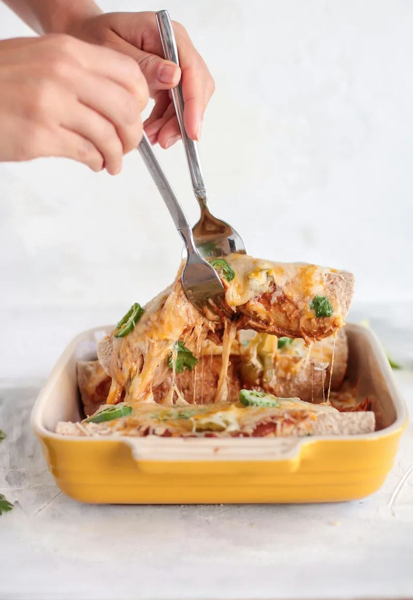
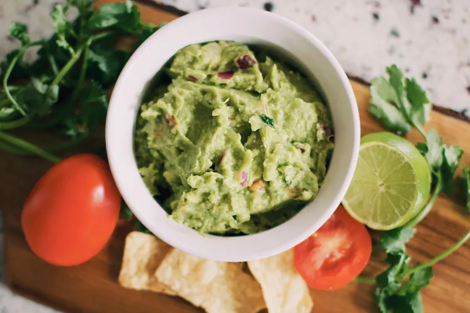
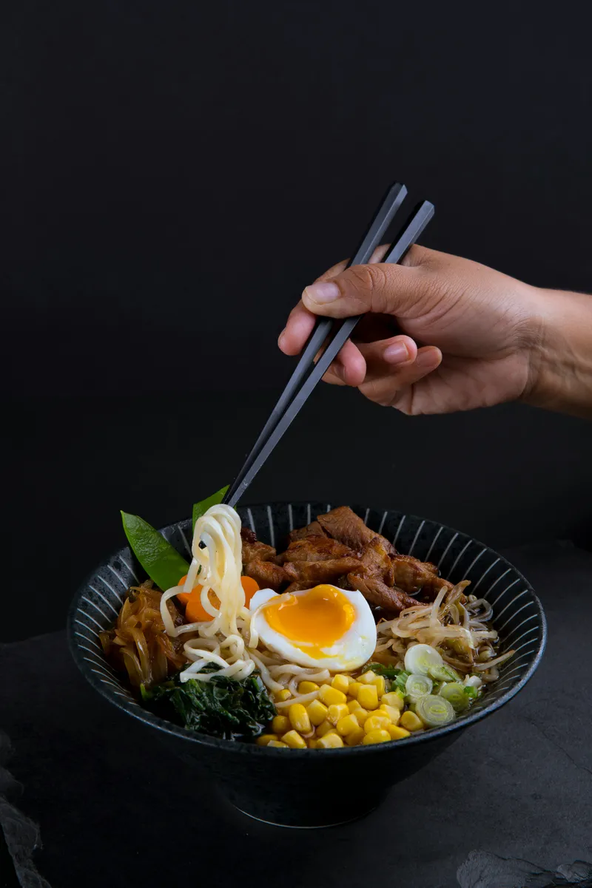

Sabores del Mundo
🍴
Categorias
🍴
Enlaces
Descubre nuevas recetas y aprende a cocinar
En este sitio encontrarás recetas deliciosas, información sobre restaurantes y eventos culinarios.
Platos Italianos
Pasta al Pesto
Lasagna
Pizza Margarita
Platos Mexicanos
Tacos de Pollo

Enchiladas

Guacamole
Platos Asiáticos
Sushi

Ramen
Dumplings